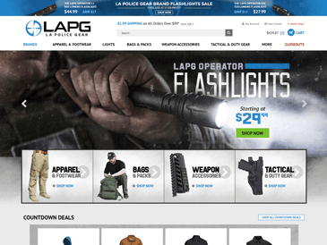

LA Police Gear* html, css, js, rtml
Overview
A brief overview of a few of my core abilities.
HTML, CSS PSD to HTML
I combine valid HTML5, scalable CSS & JavaScript to convert PSDs into fully functional websites. I use Grunt to optimize and speed up development.
Responsive Development
I've built many completely custom responsive websites over the years, ranging from non-profit/small business to large scale e-commerce stores.
JavaScript jQuery
I have experience working with JavaScript, jQuery, Ajax and JSON. I've built a number of JS-based apps from scratch to serve a variety of clients.
Skills & Experience
With over 4 years of full-time web development experience, I've had the pleasure of working on hundreds of websites.
- Front-End Web Developer
- Your Store Wizards, Minneapolis, MN
- September 2013 - Present
- Front-End Web Developer
- Virtualtech Website Design, Appleton, WI
- April 2012 - September 2013
- Freelance Web Developer, Designer
- Wisconsin, Minnesota
- 2010 - Present
- Student - Web Development & Design
- Fox Valley Technical College, Appleton, WI
- 2008 - 2010
Portfolio
Below you will find a combination of work and personal web projects I have built.An asterisk indicates a project where I was the lead developer and built as an employee of Your Store Wizards.
- 
About Me
Hello! My full name is Michael David Anthony Bostone, but you can call me Mike. I was born in Texas and raised in Florida. In 2007, I relocated to Wisconsin to pursue a degree in web development. Most of my family is from the Midwest, which is how I ended up here. I often joke that I am still getting used to the winters :)
I currently reside in Minnesota and work full-time as a front-end web developer at Your Store Wizards. The majority of websites I build and update are e-commerce stores, many of which are on the Yahoo platform. I have also worked with stores on 3d Cart, Shopify and Big Commerce. My day-to-day consists of building, updating, troubleshooting, and quoting redesigns and applications on e-commerce websites. For new sites or redesigns, I develop on those projects from start to finish - taking them from PSD all the way through to implementation.
I enjoy learning new web technologies and staying up-to-date on current best practices. I also take on freelance projects whenever I can. When I am not developing, I like to spend time with my wife, family and friends, workout, play basketball, go disc golfing, watch Netflix/movies, read the bible, and watch Packer football!
Reviews
- "If you are looking for someone to develop a wonderful, professional, and easy to use web site then choose Mike! I was pleased from the first email exchange to the finished product. Mike was prompt in his emails and I always felt there was open communication. He was able to take our ideas and formulate our website that is far better than our competitions! Not only did he listen to our ideas, but was able to offer his opinions as well, as we worked to develop the website. Whether you are a novice or understand web site development I advise you to work with him - you will not be sorry! I highly recommend him."
- Sandra M.
- Key Home Care Inc. - Minneapolis, MN
- View Website
- "Absolutely outstanding experience. I provided the written content and Mike brought it to life with very little artistic guidance from me and I could not be happier. Technically the site feels professional, visually it is stunning. And the mobile version is gorgeous. Especially for a wedding website this is extremely important, most people check these sites at the last minute for locations and times, the mobile site is easy to use and clean. He was very responsive to my requests and made professional recommendations on how to handle the RSVP page that worked out very well. I have highly recommended him to my friends and family and will absolutely look to him in the future for web design needs."
- Nick K.
- Wedding Website - Madison, WI
- View Website
- "Mike does an excellent job! With designing and coding our new website we have had nothing but a great experience! I highly recommend him - he is very easy to work with and readily accessible!"
- Serena E.
- Thomas Allen Inc. - Minneapolis, MN
- View Website